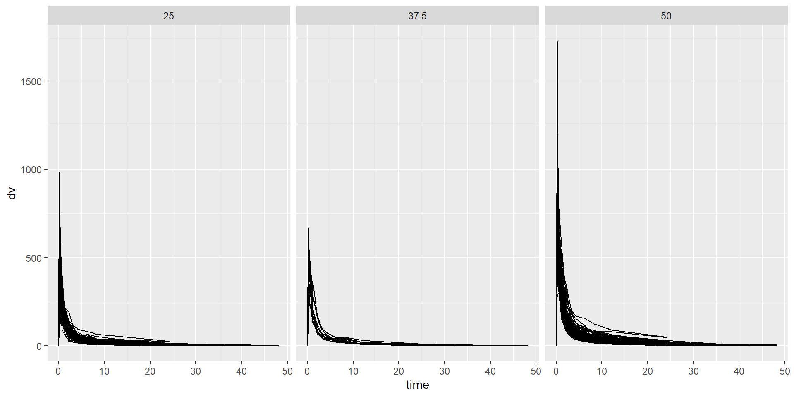

# load packages
library(ggplot2)
library(dplyr)
Attaching package: 'dplyr'The following objects are masked from 'package:stats':
filter, lagThe following objects are masked from 'package:base':
intersect, setdiff, setequal, union# load packages
library(ggplot2)
library(dplyr)
Attaching package: 'dplyr'The following objects are masked from 'package:stats':
filter, lagThe following objects are masked from 'package:base':
intersect, setdiff, setequal, union# load data
dat <- read.csv(
here::here("fitting-exercise/data/Mavoglurant_A2121_nmpk.csv")
)
names(dat) <- tolower(names(dat))# plot time by dv for each id, stratified by dose
plot <- ggplot(dat) +
geom_line(aes(x=time, y=dv, group=id)) +
facet_wrap(~dose)
print(plot)
# keep only obs where occ=1
dat1 <- dat %>%
filter(occ == 1)# exclude obs where time=0, sum dv for each id
dat2 <- dat1 %>%
filter(time != 0) %>%
group_by(id) %>%
summarize(
Y = sum(dv)
)
# create df with time=0 obs only
dat3 <- dat1 %>%
filter(time == 0)
# join by id
dat4 <- full_join(x=dat2, y=dat3, by="id")# convert race and sex to factors
# keep only Y, dose, age, sex, race, wt, ht
dat5 <- dat4 %>%
mutate(
race = factor(race),
sex = factor(sex)
) %>%
select(
Y, dose, age, sex, race, wt, ht
)
str(dat5)tibble [120 × 7] (S3: tbl_df/tbl/data.frame)
$ Y : num [1:120] 2691 2639 2150 1789 3126 ...
$ dose: num [1:120] 25 25 25 25 25 25 25 25 25 25 ...
$ age : int [1:120] 42 24 31 46 41 27 23 20 23 28 ...
$ sex : Factor w/ 2 levels "1","2": 1 1 1 2 2 1 1 1 1 1 ...
$ race: Factor w/ 4 levels "1","2","7","88": 2 2 1 1 2 2 1 4 2 1 ...
$ wt : num [1:120] 94.3 80.4 71.8 77.4 64.3 ...
$ ht : num [1:120] 1.77 1.76 1.81 1.65 1.56 ...# participant demographics by dose
table1 <- dat5 %>%
gtsummary::tbl_summary(
include = c(age, sex, race, wt, ht),
by = dose
) %>%
gtsummary::as_kable()
print(table1)
|**Characteristic** | **25** N = 59 | **37.5** N = 12 | **50** N = 49 |
|:------------------|:-----------------:|:-----------------:|:-----------------:|
|age | 30 (26, 40) | 38 (27, 45) | 32 (26, 39) |
|sex | | | |
|1 | 49 (83%) | 10 (83%) | 45 (92%) |
|2 | 10 (17%) | 2 (17%) | 4 (8.2%) |
|race | | | |
|1 | 32 (54%) | 10 (83%) | 32 (65%) |
|2 | 21 (36%) | 2 (17%) | 13 (27%) |
|7 | 1 (1.7%) | 0 (0%) | 1 (2.0%) |
|88 | 5 (8.5%) | 0 (0%) | 3 (6.1%) |
|wt | 81 (72, 90) | 80 (72, 86) | 83 (75, 93) |
|ht | 1.77 (1.70, 1.82) | 1.74 (1.68, 1.82) | 1.78 (1.73, 1.81) |# plot Y by dose
plot1 <- ggplot(dat5) +
geom_boxplot(aes(x=factor(dose), y=Y))
print(plot1)Boxplot of dose by Y should 2 individuals of dose 25 with higher Y values, 1 individual od dose 50 with higher Y value.
# plot Y by age
plot2 <- ggplot(dat5) +
geom_point(aes(x=age, y=Y))
print(plot2)Scatterplot of age by Y appears randomly distributed.
# plot Y by sex
plot3 <- ggplot(dat5) +
geom_boxplot(aes(x=sex, y=Y))
print(plot3)
Boxplot of sex by Y shows one individual of sex 1 and one individual of sex 2 with higher values of Y.
# distribution of Y
hist1 <- ggplot(dat5) +
geom_histogram(aes(Y))
print(hist1)`stat_bin()` using `bins = 30`. Pick better value with `binwidth`.
Histogram of Y is right-skewed with some high-value outliers.
# distribution of dose
bar1 <- ggplot(dat5) +
geom_bar(aes(factor(dose)))
print(bar1)
Bar plot of dose shows that more individuals recieve dose 25 or 50 than dose 37.5.
# distribution of age
hist2 <- ggplot(dat5) +
geom_histogram(aes(age))
print(hist2)`stat_bin()` using `bins = 30`. Pick better value with `binwidth`.
Histogram of age appears multimodal. Most individuals are either late-20s or late-30s.
# distribution of sex
bar2 <- ggplot(dat5) +
geom_bar(aes(sex))
print(bar2)
Bar plot of sex shows that most individuals are of sex 1.
# distribution of race
bar3 <- ggplot(dat5) +
geom_bar(aes(race))
print(bar3)
Bar plot of race shows that most individuals are of race 1. Some are of race 2 and few are of races 7 and 88.
# distribution of wt
hist3 <- ggplot(dat5) +
geom_histogram(aes(wt))
print(hist3)`stat_bin()` using `bins = 30`. Pick better value with `binwidth`.
Histogram of weight shows a normal distribution.
# distribution of ht
hist4 <- ggplot(dat5) +
geom_histogram(aes(ht))
print(hist4)`stat_bin()` using `bins = 30`. Pick better value with `binwidth`.
Histogram of height shows normal to slightly left-skewed distribution.
plot4 <- ggplot(dat5) +
geom_boxplot(aes(x=sex, y=wt))
print(plot4)Boxplot of sex by height shows that sex 1 has larger values for weight than sex 2
plot5 <- ggplot(dat5) +
geom_boxplot(aes(x=sex, y=ht))
print(plot5)Boxplot of sex by height shows that sex 1 has larger values for height than sex 2
# pair plot
pairs(dat5)Pair plot shows general relationships between variables. Y seems positively associated with dose. Weight and height show a positive linear relationship.
# linear model to Y using dose
fit1 <- parsnip::linear_reg() %>%
parsnip::fit(
Y ~ dose,
data=dat5
)
broom::tidy(fit1)# A tibble: 2 × 5
term estimate std.error statistic p.value
<chr> <dbl> <dbl> <dbl> <dbl>
1 (Intercept) 323. 199. 1.62 1.07e- 1
2 dose 58.2 5.19 11.2 2.69e-20# predict Y
fit1_pred <- predict(
fit1,
new_data=dat5
)
# combine real data with predictions
fit1_result <- dat5 %>%
select(Y, dose) %>%
bind_cols(fit1_pred)
# calculate rmse
fit1_result %>%
yardstick::rmse(
truth=Y,
estimate=.pred
)# A tibble: 1 × 3
.metric .estimator .estimate
<chr> <chr> <dbl>
1 rmse standard 666.# calculate R squared
fit1_result %>%
yardstick::rsq(
truth=Y,
estimate=.pred
)# A tibble: 1 × 3
.metric .estimator .estimate
<chr> <chr> <dbl>
1 rsq standard 0.516RMSE = 666 and R-squared = 0.516
# linear model to Y using all predictors
fit2 <- parsnip::linear_reg() %>%
parsnip::fit(
Y ~ dose + age + sex + race + wt + ht,
data=dat5
)
broom::tidy(fit2)# A tibble: 9 × 5
term estimate std.error statistic p.value
<chr> <dbl> <dbl> <dbl> <dbl>
1 (Intercept) 3387. 1835. 1.85 6.76e- 2
2 dose 59.9 4.88 12.3 2.05e-22
3 age 3.16 7.82 0.403 6.88e- 1
4 sex2 -358. 217. -1.65 1.02e- 1
5 race2 155. 129. 1.21 2.31e- 1
6 race7 -405. 448. -0.904 3.68e- 1
7 race88 -53.5 245. -0.219 8.27e- 1
8 wt -23.0 6.40 -3.60 4.71e- 4
9 ht -748. 1104. -0.678 4.99e- 1# predict Y
fit2_pred <- predict(
fit2,
new_data=dat5
)
# combine real data with predictions
fit2_result <- dat5 %>%
select(Y, dose, age, sex, race, wt, ht) %>%
bind_cols(fit2_pred)
# calculate rmse
fit2_result %>%
yardstick::rmse(
truth=Y,
estimate=.pred
)# A tibble: 1 × 3
.metric .estimator .estimate
<chr> <chr> <dbl>
1 rmse standard 591.# calculate R squared
fit2_result %>%
yardstick::rsq(
truth=Y,
estimate=.pred
)# A tibble: 1 × 3
.metric .estimator .estimate
<chr> <chr> <dbl>
1 rsq standard 0.619RMSE = 591 and R-squared = 0.619
The full model, with all predictors included, has a lower RMSE, which indicated lower error, then the reduced model, with dose as the only predictor. The full model also has a higher R-squared value, indicating a better fit then the reduced model.
# logistic model to sex using dose
fit3 <- parsnip::logistic_reg() %>%
parsnip::fit(
sex ~ dose,
data=dat5
)
broom::tidy(fit3)# A tibble: 2 × 5
term estimate std.error statistic p.value
<chr> <dbl> <dbl> <dbl> <dbl>
1 (Intercept) -0.765 0.854 -0.896 0.370
2 dose -0.0318 0.0243 -1.31 0.192# predict sex
fit3_pred <- predict(
fit3,
new_data=dat5
)
# get prediction probabilities
fit3_prob <- predict(
fit3,
new_data = dat5,
type = "prob"
)
# combine real data with predictions
fit3_result <- dat5 %>%
select(sex, dose) %>%
bind_cols(fit3_pred, fit3_prob)
# compute accuracy
yardstick::accuracy(
fit3_result,
truth = sex,
estimate = .pred_class
)# A tibble: 1 × 3
.metric .estimator .estimate
<chr> <chr> <dbl>
1 accuracy binary 0.867# compute ROC-AUC
yardstick::roc_auc(
fit3_result,
truth=sex,
.pred_1
)# A tibble: 1 × 3
.metric .estimator .estimate
<chr> <chr> <dbl>
1 roc_auc binary 0.592The model classification accuracy is about 86.7%.
The model has a ROC-AUC of 0.592 indicating predictive performance is low, just slightly better than random guessing.
# logistic model to sex using all predictors
fit4 <- parsnip::logistic_reg() %>%
parsnip::fit(
sex ~ Y + dose + age + race + wt + ht,
data=dat5
)
broom::tidy(fit4)# A tibble: 9 × 5
term estimate std.error statistic p.value
<chr> <dbl> <dbl> <dbl> <dbl>
1 (Intercept) 60.3 18.0 3.34 0.000824
2 Y -0.00104 0.000963 -1.08 0.280
3 dose -0.0308 0.0776 -0.396 0.692
4 age 0.0834 0.0607 1.37 0.170
5 race2 -1.93 1.37 -1.40 0.161
6 race7 0.118 3.85 0.0306 0.976
7 race88 -1.50 2.19 -0.683 0.494
8 wt -0.0628 0.0794 -0.791 0.429
9 ht -33.2 11.1 -3.00 0.00274 # predict sex
fit4_pred <- predict(
fit4,
new_data=dat5
)
# get prediction probabilities
fit4_prob <- predict(
fit4,
new_data = dat5,
type = "prob"
)
# combine real data with predictions
fit4_result <- dat5 %>%
select(sex, Y, dose, age, race, wt, ht) %>%
bind_cols(fit4_pred, fit4_prob)
# compute accuracy
yardstick::accuracy(
fit4_result,
truth = sex,
estimate = .pred_class
)# A tibble: 1 × 3
.metric .estimator .estimate
<chr> <chr> <dbl>
1 accuracy binary 0.942# compute ROC-AUC
yardstick::roc_auc(
fit4_result,
truth=sex,
.pred_1
)# A tibble: 1 × 3
.metric .estimator .estimate
<chr> <chr> <dbl>
1 roc_auc binary 0.980The model classification accuracy is about 94.7%.
The model has a ROC-AUC of 0.980 indicating overall good predictive performance.
# set seed
rngseed = 1234# remove race variable
dat6 <- dat5 %>%
select(!race)set.seed(rngseed)
# put 75% of the data into the training set
data_split <- rsample::initial_split(dat6, prop = 3/4)
# Create data frames for the two sets:
train_data <- rsample::training(data_split)
test_data <- rsample::testing(data_split)# linear model to Y using dose
fit5 <- parsnip::linear_reg() %>%
parsnip::fit(
Y ~ dose,
data=train_data
)
broom::tidy(fit5)# A tibble: 2 × 5
term estimate std.error statistic p.value
<chr> <dbl> <dbl> <dbl> <dbl>
1 (Intercept) 535. 244. 2.19 3.08e- 2
2 dose 53.4 6.29 8.50 4.41e-13# predict Y
fit5_pred <- predict(
fit5,
new_data=train_data
)
# combine real data with predictions
fit5_result <- train_data %>%
select(Y, dose) %>%
bind_cols(fit5_pred)
# calculate rmse
fit5_result %>%
yardstick::rmse(
truth=Y,
estimate=.pred
)# A tibble: 1 × 3
.metric .estimator .estimate
<chr> <chr> <dbl>
1 rmse standard 703.# calculate R squared
fit5_result %>%
yardstick::rsq(
truth=Y,
estimate=.pred
)# A tibble: 1 × 3
.metric .estimator .estimate
<chr> <chr> <dbl>
1 rsq standard 0.451RMSE = 703 and R-squared = 0.451
# linear model to Y using all predictors
fit6 <- parsnip::linear_reg() %>%
parsnip::fit(
Y ~ dose + age + sex + wt + ht,
data=train_data
)
broom::tidy(fit6)# A tibble: 6 × 5
term estimate std.error statistic p.value
<chr> <dbl> <dbl> <dbl> <dbl>
1 (Intercept) 4397. 2170. 2.03 4.59e- 2
2 dose 55.3 5.83 9.49 6.09e-15
3 age -0.417 9.50 -0.0439 9.65e- 1
4 sex2 -569. 285. -1.99 4.95e- 2
5 wt -22.6 7.65 -2.96 4.00e- 3
6 ht -1130. 1358. -0.832 4.08e- 1# predict Y
fit6_pred <- predict(
fit6,
new_data=train_data
)
# combine real data with predictions
fit6_result <- train_data %>%
select(Y, dose, age, sex, wt, ht) %>%
bind_cols(fit6_pred)
# calculate rmse
fit6_result %>%
yardstick::rmse(
truth=Y,
estimate=.pred
)# A tibble: 1 × 3
.metric .estimator .estimate
<chr> <chr> <dbl>
1 rmse standard 627.# calculate R squared
fit6_result %>%
yardstick::rsq(
truth=Y,
estimate=.pred
)# A tibble: 1 × 3
.metric .estimator .estimate
<chr> <chr> <dbl>
1 rsq standard 0.562RMSE = 627 and R-squared = 0.562
# compute rmse of null model
null <- parsnip::null_model() %>%
parsnip::set_engine("parsnip") %>%
parsnip::set_mode("regression") %>%
parsnip::fit(Y ~ ., data = train_data)
# predict Y
null_pred <- predict(
null,
new_data=train_data
)
# combine real data with predictions
null_result <- train_data %>%
select(Y) %>%
bind_cols(null_pred)
# calculate rmse
null_result %>%
yardstick::rmse(
truth=Y,
estimate=.pred
)# A tibble: 1 × 3
.metric .estimator .estimate
<chr> <chr> <dbl>
1 rmse standard 948.RMSE = 948
The RMSE of the full model is the lowest, at 627. This indicates that the full model is predicting values closer to the actual data than both the null and univarite models.
# setup
# fit model with resampling
set.seed(rngseed)
# define linear model specification
model_spec <- parsnip::linear_reg() %>%
parsnip::set_engine("lm") %>%
parsnip::set_mode("regression")
# define null model specification
null_spec <- parsnip::null_model() %>%
parsnip::set_engine("parsnip") %>%
parsnip::set_mode("regression")
# create folds
folds <- rsample::vfold_cv(train_data, v = 10)# linear model to Y using dose
fit_wf1 <- workflows::workflow() %>%
workflows::add_model(model_spec) %>%
workflows::add_formula(Y ~ dose)
fit_rs1 <- fit_wf1 %>%
tune::fit_resamples(folds)
tune::collect_metrics(fit_rs1)# A tibble: 2 × 6
.metric .estimator mean n std_err .config
<chr> <chr> <dbl> <int> <dbl> <chr>
1 rmse standard 691. 10 67.5 Preprocessor1_Model1
2 rsq standard 0.512 10 0.0592 Preprocessor1_Model1RMSE = 691, SE = 67.5; R-squared = 0.512, SE = 0.0592
# linear model to Y using all predictors
fit_wf2 <- workflows::workflow() %>%
workflows::add_model(model_spec) %>%
workflows::add_formula(Y ~ dose + age + sex + wt + ht)
fit_rs2 <- fit_wf2 %>%
tune::fit_resamples(folds)
tune::collect_metrics(fit_rs2)# A tibble: 2 × 6
.metric .estimator mean n std_err .config
<chr> <chr> <dbl> <int> <dbl> <chr>
1 rmse standard 646. 10 64.8 Preprocessor1_Model1
2 rsq standard 0.573 10 0.0686 Preprocessor1_Model1RMSE = 646, SE = 64.8; R-squared = 0.573, SE = 0.0686
# null model
fit_wf_null <- workflows::workflow() %>%
workflows::add_model(null_spec) %>%
workflows::add_formula(Y ~ .)
fit_rs_null <- fit_wf_null %>%
tune::fit_resamples(folds)→ A | warning: A correlation computation is required, but `estimate` is constant and has 0
standard deviation, resulting in a divide by 0 error. `NA` will be returned.There were issues with some computations A: x1There were issues with some computations A: x10tune::collect_metrics(fit_rs_null)# A tibble: 2 × 6
.metric .estimator mean n std_err .config
<chr> <chr> <dbl> <int> <dbl> <chr>
1 rmse standard 933. 10 76.7 Preprocessor1_Model1
2 rsq standard NaN 0 NA Preprocessor1_Model1RMSE = 933, SE = 76.7
The original RMSE value for the univariate model was 703, compared to the new value of 691. Using the cross-validation method to evaluate this model resulted in a better estimated fit. The standard error is 67.5, which is relatively large. This indicates that the RMSE varies considerably across folds, possibly suggesting an unstable model or high data variability.
The original RMSE value for the full model was 627, compared to the new value of 646. Using the cross-validation method to evaluate this model resulted in a weaker estimated fit. The standard error is 64.8, which is relatively large. This indicates that the RMSE varies considerably across folds, possibly suggesting an unstable model or high data variability.
The RMSE values for the null model are similar.
# setup
# fit model with resampling
set.seed(333)
# define linear model specification
model_spec <- parsnip::linear_reg() %>%
parsnip::set_engine("lm") %>%
parsnip::set_mode("regression")
# define null model specification
null_spec <- parsnip::null_model() %>%
parsnip::set_engine("parsnip") %>%
parsnip::set_mode("regression")
# create folds
folds <- rsample::vfold_cv(train_data, v = 10)# linear model to Y using dose
fit_wf1 <- workflows::workflow() %>%
workflows::add_model(model_spec) %>%
workflows::add_formula(Y ~ dose)
fit_rs1 <- fit_wf1 %>%
tune::fit_resamples(folds)
tune::collect_metrics(fit_rs1)# A tibble: 2 × 6
.metric .estimator mean n std_err .config
<chr> <chr> <dbl> <int> <dbl> <chr>
1 rmse standard 706. 10 48.1 Preprocessor1_Model1
2 rsq standard 0.484 10 0.0660 Preprocessor1_Model1RMSE = 706, SE = 48.1; R-squared = 0.484
# linear model to Y using all predictors
fit_wf2 <- workflows::workflow() %>%
workflows::add_model(model_spec) %>%
workflows::add_formula(Y ~ dose + age + sex + wt + ht)
fit_rs2 <- fit_wf2 %>%
tune::fit_resamples(folds)
tune::collect_metrics(fit_rs2)# A tibble: 2 × 6
.metric .estimator mean n std_err .config
<chr> <chr> <dbl> <int> <dbl> <chr>
1 rmse standard 645. 10 52.7 Preprocessor1_Model1
2 rsq standard 0.566 10 0.0619 Preprocessor1_Model1RMSE = 645, SE = 52.7; R-squared = 0.566, SE = 0.0619
# null model
fit_wf_null <- workflows::workflow() %>%
workflows::add_model(null_spec) %>%
workflows::add_formula(Y ~ .)
fit_rs_null <- fit_wf_null %>%
tune::fit_resamples(folds)→ A | warning: A correlation computation is required, but `estimate` is constant and has 0
standard deviation, resulting in a divide by 0 error. `NA` will be returned.There were issues with some computations A: x4There were issues with some computations A: x10tune::collect_metrics(fit_rs_null)# A tibble: 2 × 6
.metric .estimator mean n std_err .config
<chr> <chr> <dbl> <int> <dbl> <chr>
1 rmse standard 936. 10 69.1 Preprocessor1_Model1
2 rsq standard NaN 0 NA Preprocessor1_Model1RMSE = 936, SE = 69.1